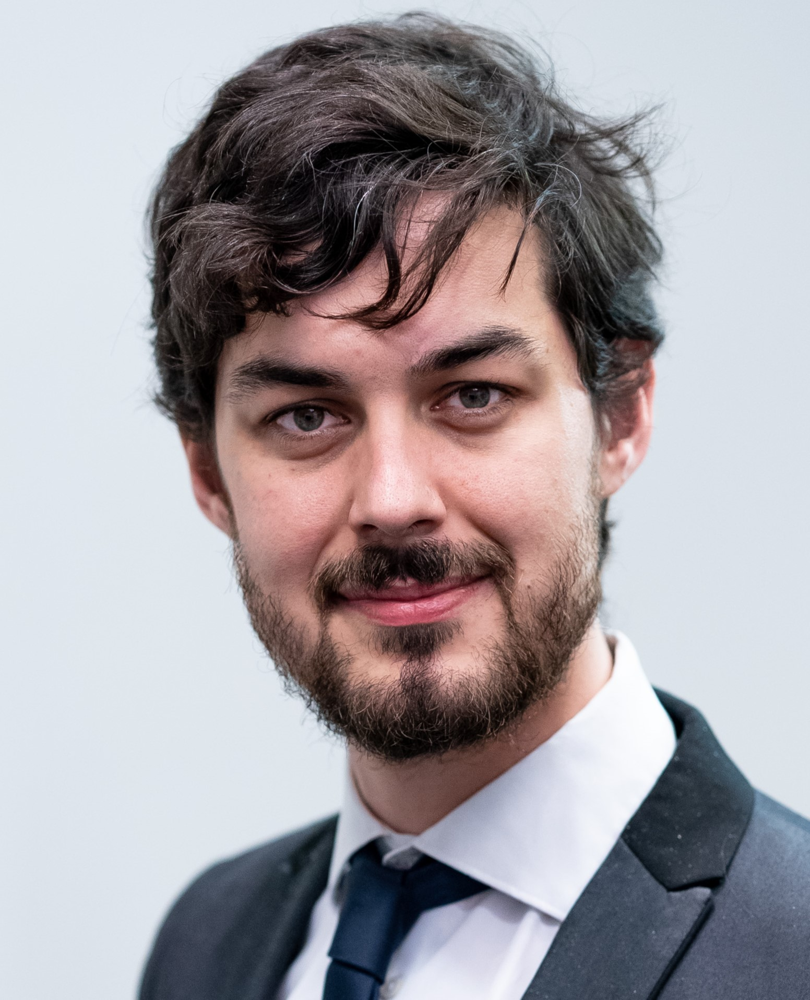
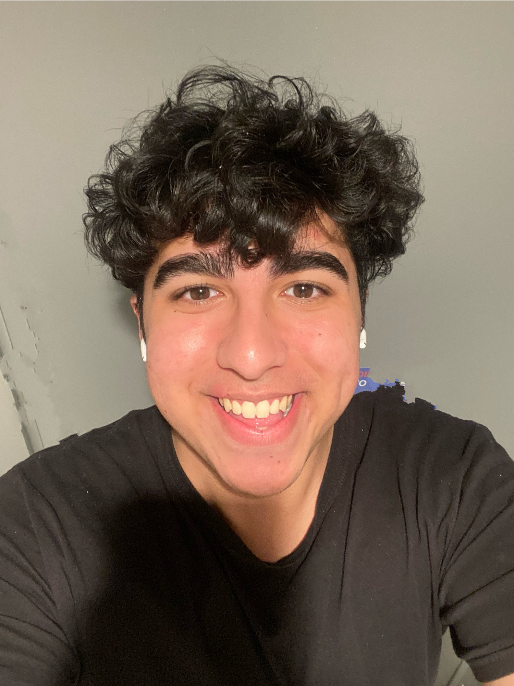
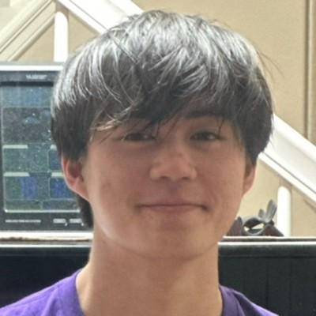
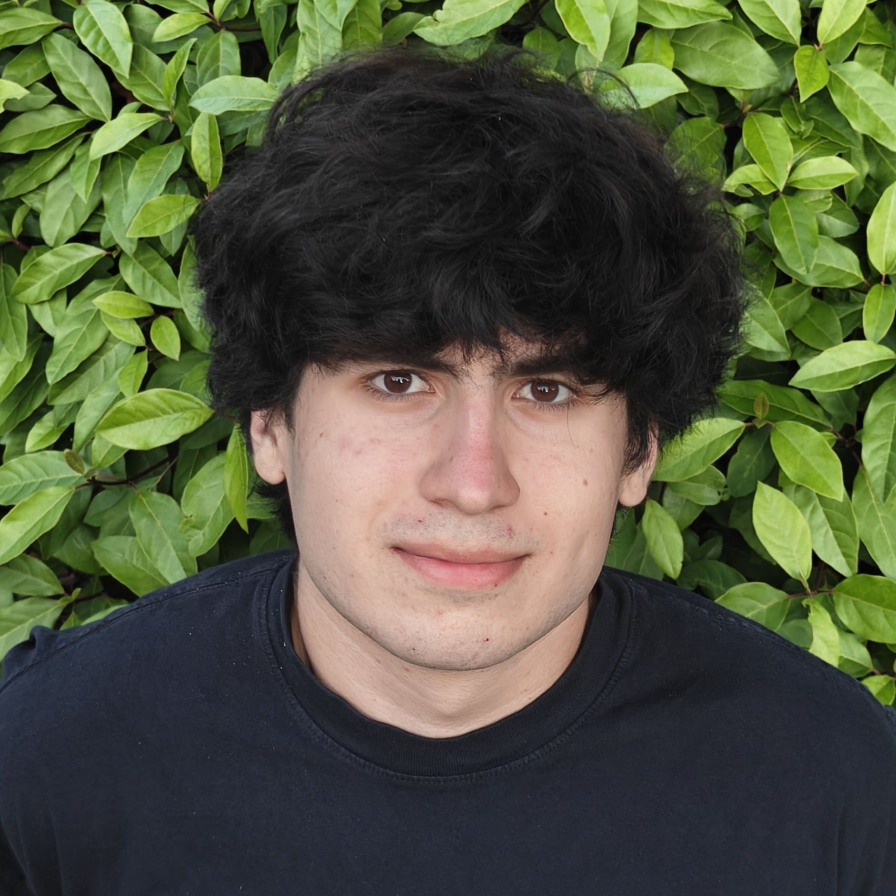

PEOPLE

Brody H Foy, DPhil
Assistant Professor, Department of Laboratory Medicine & Pathology
Adjunct Assistant Professor, Department of Bioengineering
Assistant Professor, Department of Laboratory Medicine & Pathology
Adjunct Assistant Professor, Department of Bioengineering
Brody is a mathematician who develops computational tools for medicine. He was a
graduate student in computer science at the University of Oxford, and a postdoctoral fellow in
systems biology at Harvard Medical School, and Massachusetts General Hospital. He has expertise in
computational mathematics, machine learning, hematology, and the translational of computational tools
into the clinic. Brody is a Rhodes Scholar, and has won awards for excellence in teaching and mentoring,
research, and for outstanding volunteer work. He has also worked in suicide prevention, policy outreach,
and ran a non-profit AI consultancy. He is originally from the Sunshine Coast, Australia, and misses
good beaches and the rainforest. Outside of work he likes to play guitar, hit tennis balls, and hike.
CV, Scholar, Faculty, Twitter
CV, Scholar, Faculty, Twitter
 Cindy Zhang
Cindy Zhang
Research Engineer, DLMP
Cindy is a recent Johns Hopkins graduate in biomedical engineering and computer science with interests in computational biology
and advancing health through AI/ML. She has also worked as a programmer analyst, barista, and math tutor. Originally from Minnesota,
she has a great appreciation for the summer. She enjoys trail runs, recreational swimming, and indoor climbing.
LinkedIn
 Chen (Amber) Ya-Lin
Chen (Amber) Ya-Lin
Graduate Student, BIME
Amber is a PhD student at the Department of Biomedical Informatics and Medical Education at UW.
With a background in pharmacy, she brings interdisciplinary expertise in biostatistics, AI/ML, and
their clinical applications. Outside of her studies, she enjoys discovering great food and spending
quality time with family and friends.
LinkedIn, Medium
LinkedIn, Medium

Amrit Sharma
Undergraduate
Undergraduate
Amrit is currently a first-year student at UW intending to study Computer Science. He hopes to go
into quantitative finance as a career or become an entrepreneur in the AI/ML space. Outside of
school, he loves to spend time back in his hometown in the Bay Area hiking, cooking, and spending
time with family and friends.
LinkedIn
 Gaurang Pendharkar
Gaurang Pendharkar
Undergraduate
Gaurang is a first-year Computer Science and Mathematics undergraduate at UW with a strong interest in
machine learning and data analytics. He aspires to contribute to AI research, build an innovative
app, and teach computer science as a TA. His interests include playing chess, training judo,
and finding great places to eat.
LinkedIn

Derek Zhu
Undergraduate
Undergraduate
Derek is a fourth-year Computer Science and ACMS undergraduate at UW with a huge interest in deep learning
applications in medicine. He hopes to apply his skills in the field of AI as a researcher or pursue the field
of quantitative finance. His interests include playing guitar, finding nearby cafes to eat at, and taking naps.
LinkedIn

Attila Jamilov
Undergraduate
Undergraduate
Attila is a third-year ACMS: Discrete Math and Algorithms student at UW with an interest in Backend, Low-Latency, and
High-Performance Development. He wishes to contribute to open-source software and make highly optimized software. He
has interests in bouldering, cycling, and reading web novels.